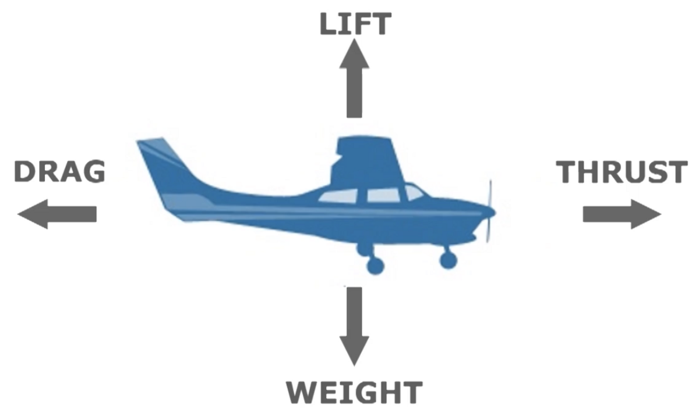
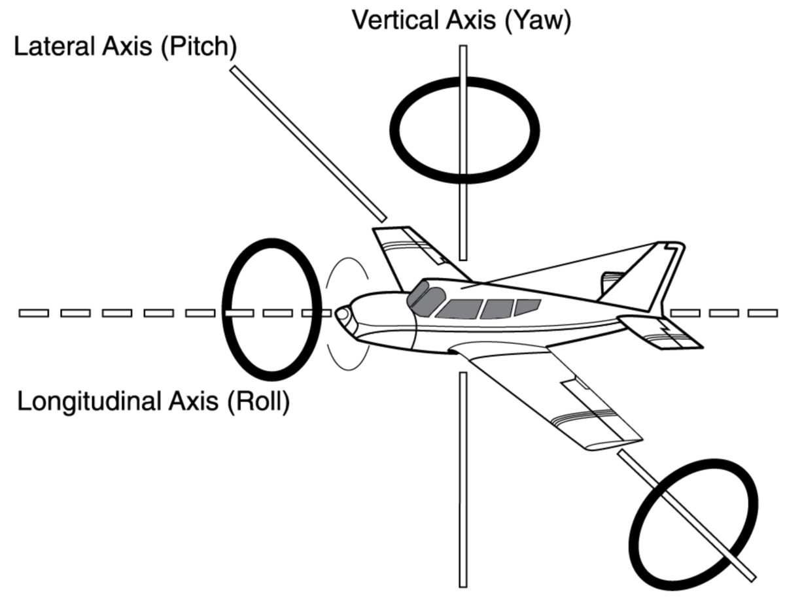
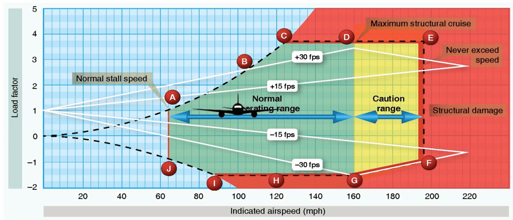
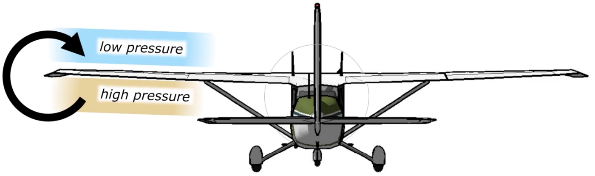

Aerodynamics & Forces of Flight
How the airplane stays up, what slows it down, why it wants to turn left, and how it behaves at the edges of the envelope.
The four forces
In steady, unaccelerated flight the four forces are in balance: lift = weight and thrust = drag. When any pair is unequal, the airplane accelerates in that direction (climbs, descends, speeds up or slows down).
How much lift a wing can support is set by the wing's design, airspeed, and air density.

Drag: parasite vs. induced
Parasite drag
Everything sticking out of the airplane hitting the air — antennas, gear, rivets, the airframe itself. It increases with airspeed ("air is soup at higher speeds").
Induced drag
The unavoidable by-product of making lift — the rearward, horizontal component of the lift vector, plus wingtip vortices. It increases at high angle of attack / low airspeed.
Because parasite drag rises with speed and induced drag falls with speed, total drag is a U-shaped curve. Its lowest point — the best lift-to-drag ratio (L/DMAX) — is the best-glide speed (maximum gliding distance).
The L/D ratio is a measure of the wing's aerodynamic efficiency — it changes only with angle of attack.
Left-turning tendencies
A single-engine prop plane (prop turning clockwise from the pilot's seat) naturally yaws/rolls left. There are three causes:
- P-factor — when climbing (high AoA), the descending blade on the right takes a bigger bite of air and makes more thrust than the left blade → nose yaws left.
- Spiraling slipstream — the propwash corkscrews clockwise around the fuselage and strikes the left side of the vertical tail/rudder → yaws left.
- Torque (Newton's 3rd law) — the prop spins right, so the airframe is pushed to roll left.
A fourth cause is often tested: gyroscopic precession (felt mainly in tailwheel airplanes when the tail comes up). Torque and P-factor are strongest at low airspeed, high power, and high angle of attack — i.e. the climb. That's why you feed in right rudder on takeoff.
Axes & flight controls

Stability & the CG
- Stable = the airplane tends to return to its original attitude after a disturbance. (Static stability = initial tendency; dynamic stability = what happens over time.)
- The center of gravity (CG) should be ahead of the center of pressure (CP) — and ahead of the main wheels. A forward CG is more stable (the tail provides a downward balancing force); an aft CG is less stable at all speeds and makes stall/spin recovery harder.
- CP (center of pressure) = the point where the wing's lift effectively acts.
- Dihedral (the upward V of the wings) provides lateral (roll) stability.
Stalls & spins
- A wing stalls when it exceeds its critical angle of attack — so it can be stalled at any airspeed or attitude (even fast, even nose-down), not just in slow flight.
- A spin happens when both wings are stalled but one is more stalled than the other — the less-stalled wing keeps flying, so the airplane autorotates.
- On a rectangular wing (e.g. the Cessna 172), the wing root is at a higher angle of attack than the tip, so the root stalls first. Benefits: the ailerons stay effective at the start of a stall, and you get an aerodynamic stall warning — a buffet (airframe vibration) — before the whole wing lets go.
- T-tail airplanes sit the elevator above the wing's turbulent wake, so the tail doesn't buffet as the wing nears the stall — you lose the usual stall-warning vibration, which makes the stall harder to recognize and recover from.
What changes stall speed
You always stall at the critical angle of attack — but the speed at which you reach it shifts with how hard the wing is working:
| Factor | Condition | Stall speed | Why |
|---|---|---|---|
| Weight | Heavier | ↑ higher | More lift needed → higher AoA just to stay level. |
| Load factor | Steep bank / pull-up | ↑ higher | G‑force acts like extra weight — the wing works harder. |
| CG | Forward CG | ↑ higher | More tail downforce to hold the nose up = extra weight to carry. |
| Flaps | Extended | ↓ lower | More camber → more lift at slower speed. |
| Contamination | Ice / frost / bugs | ↑ higher | Disrupts airflow → wing stalls at a lower critical AoA. |
| Altitude | Higher | no change | True stall speed rises, but the indicated stall speed is unchanged (see airspeeds). |
Load factor
Load factor = G-force = the multiplier on the weight you feel. It increases in turns/banks — the steeper the bank, the higher the load factor — which also raises stall speed.
Load factor matters for turns — straight-and-level pulls 1 G regardless of speed.

Ground effect
Near the ground, the surface interrupts the wingtip vortices and downwash, reducing induced drag. It's most prominent within one wingspan's height above the runway. The airplane feels like it "floats." Beware of trying to climb out of ground effect before reaching a safe airspeed.

Those vortices are wake turbulence, strongest behind an aircraft that's heavy, clean, and slow (high angle of attack). A light crosswind traps the vortices onto the runway — holding the upwind vortex in place instead of letting it drift clear.